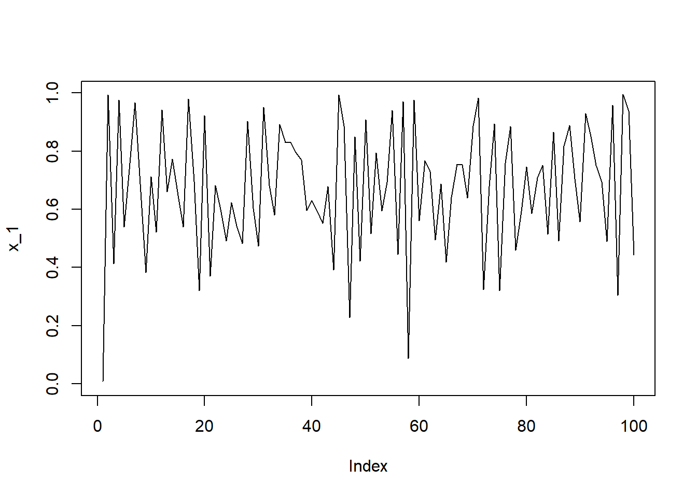
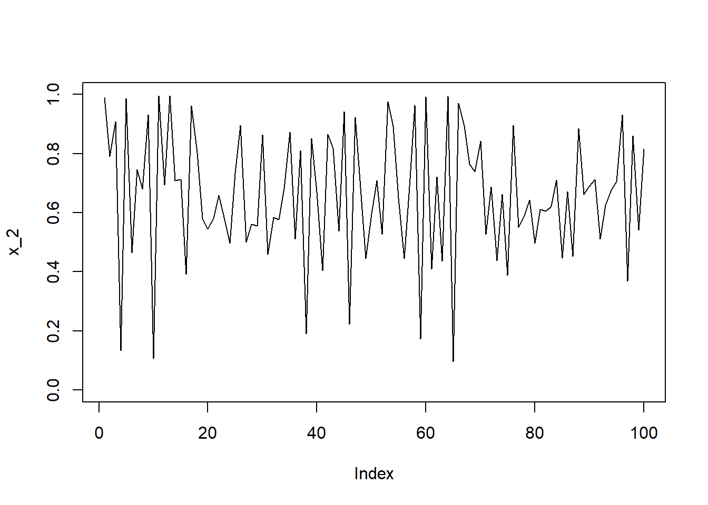
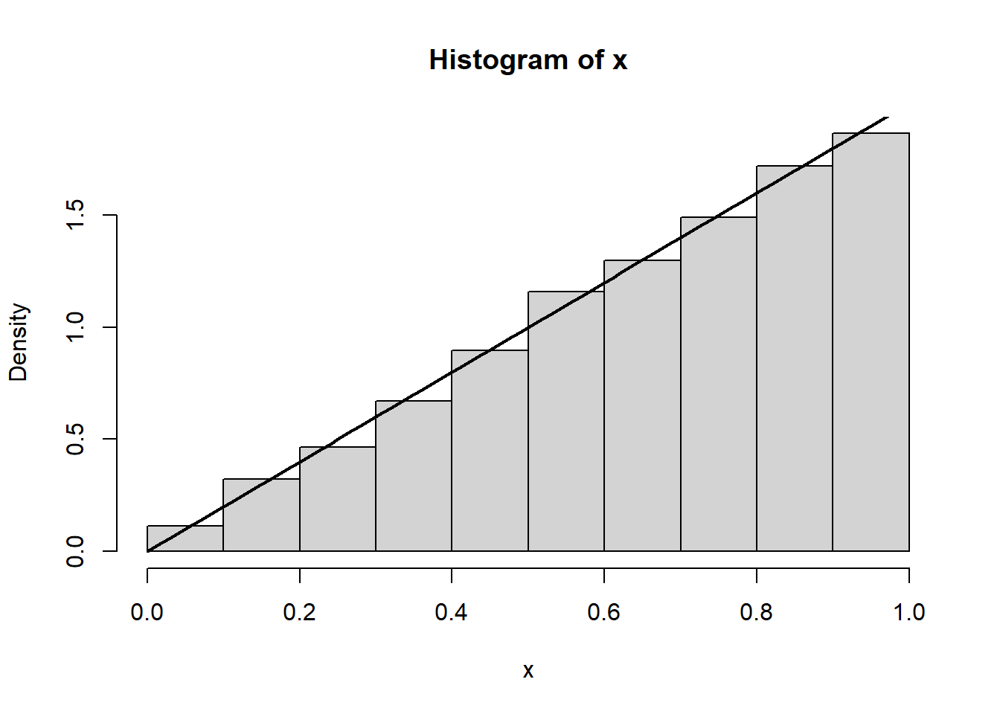
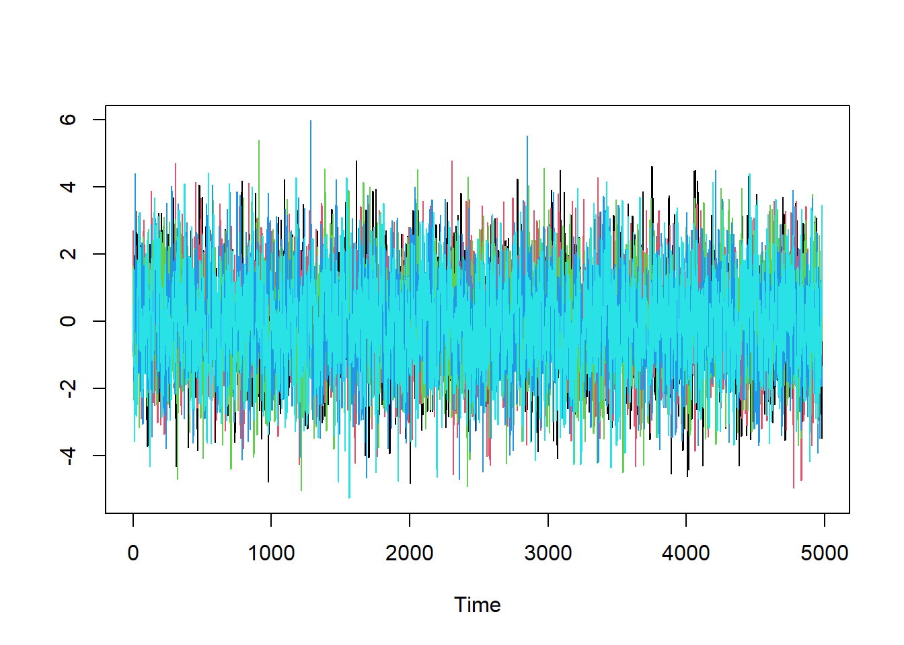
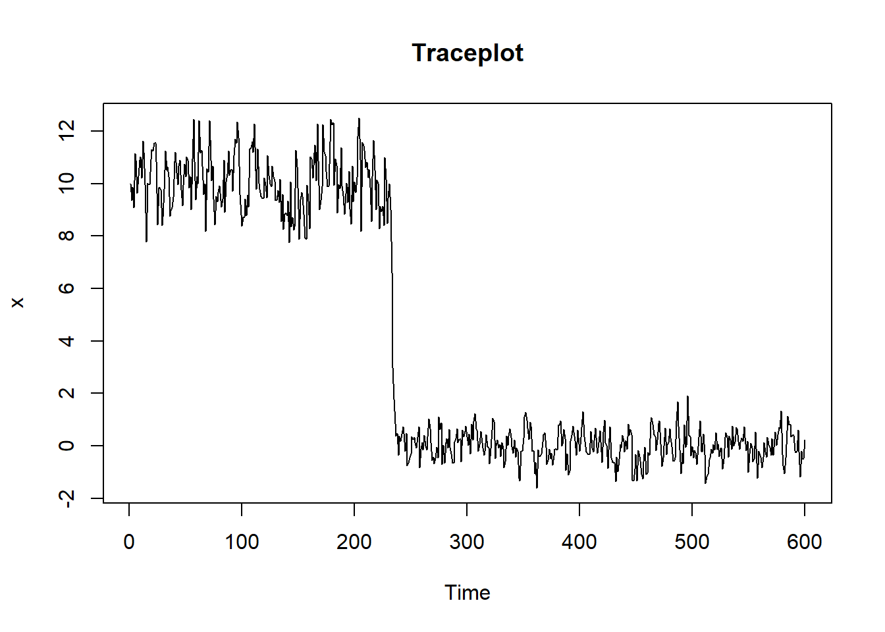
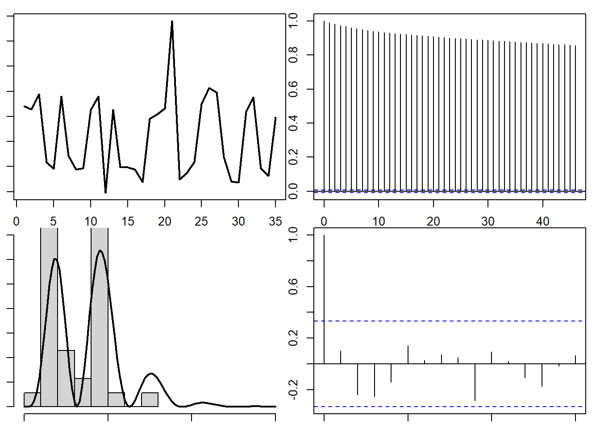
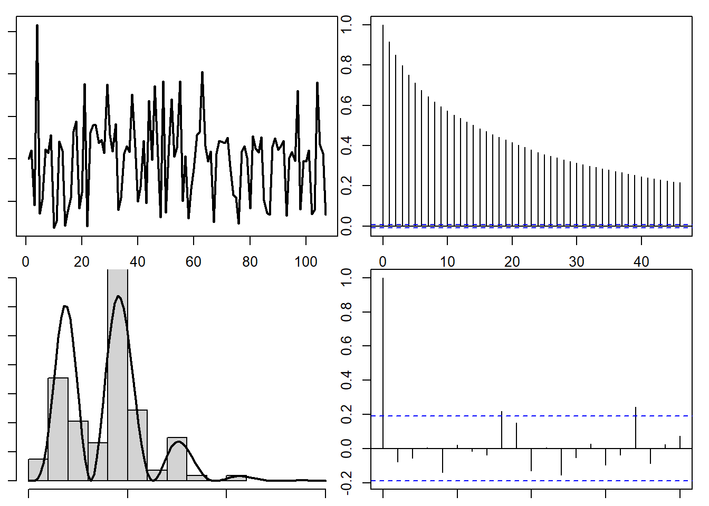

A coleção \(\{X(t),t\in T\}\) é um processo estocástico se \(X(t)\) é uma variável aleatória para cada \(t\inT\). A variável \(X(t)\) é denominada estado. O processo é dito ser a tempo discreto se \(T\subseteq \mathbb{Z}\).
Em um processo a tempo discreto, é usual utilizar a notação \(X(t)\equiv X_t\).
O processo estocástico \(\{\ldots,X_1,X_0,X_1,X_2,\ldots\}\) é uma cadeia de Markov de ordem \(d\) se
Uma cadeia de Markov é dita ser homogênea se, para qualquer \(m>0\) natural,
\[P(X_n\in A|X_{n−1}=x_{n−1},…,X_{n−d}=x_{n−d})=P(X_{n+m}\in A|X_{n+m−1}=x_{n−1},…,X_{n+m−d}=x_{n−d}).\] Estamos interessados nas cadeias homogêneas de ordem \(d=1\), que doravante serão denominadas simplesmente por cadeias de Markov.
Example 8.1 Considere a seguinte cadeia de Markov:
\[X_{n}|X_{n−1}=y∼\hbox{Uniforme}(1−y,1).\]
Abaixo, simulamos duas trajetórias deste processo, cada uma com um valor diferente para \(x_0\):
set.seed(123)# pontos iniciais as trajetóriasx_1 <- .01x_2 <- .99for(i in2:100){ x_1[i] <-runif(1, 1- x_1 [i -1] , 1) x_2[i] <-runif(1, 1- x_2 [i -1] , 1)}# gráfico das duas trajetóriasplot(x_1, type='l', ylim=c(0,1))

plot(x_2, type='l', ylim=c(0,1))

plot(x_1,x_2, type ="l", col =1)points(x_1[1] , x_2[1] , pch=16) # ponto inicial
A evolução da cadeia de \(X_n\) até \(X_{n+1}\) é denominada transição 1 -passos à frente. A densidade \(k(.|y)\) que satisfaz
\[P(X_{n+1}\in A|X_n=y)=\int_A k(x|y)dx\]
é denominada núcleo de transição (ou núcleo de transição 1 -passo à frente). De maneira análoga, a densidade \(k^{(d)}(.|y)\) que que satisfaz
\[P(X_{n+d}\in A|X_{n}=y)=\int_A k^{(d)}(x|y)dx\] é denominada núcleo de transição \(d\)-passos à frente.
Equações de Chapman-Kolmogorov Para qualquer \(0<m<n\) tem-se que
Dizemos que \(\pi(.)\) é a densidade da distribuição estacionária de uma cadeia de Markov se
\[\pi(y)=\int_{\mathbb{R}} \pi(x)k(y|x)dx,\] ou seja a distribuição estacionária é a distribuição marginal do processo. Como
\[\begin{align}\int_{\mathbb{R}}\pi(x)k^{(2)}(y|x)dx&=\int_{\mathbb{R}}\pi(x)\int_{\mathbb{R}}k(y|u)k(u|x)dudx\\&=\int_{\mathbb{R}}k(y|u)[\int_{\mathbb{R}}\pi(x)k(u|x)dx]du\\&=\int_{\mathbb{R}}k(y|u)\pi(u)du=\pi(y)\end{align}\] é simples mostrar por indução que \(\pi(.)\) satisfaz
\[\pi(y)=\int_{\mathbb{R}}\pi(x)k^{(n)}(y|x)dx.\]
Suponha que valem as seguintes afirmações:
Existe \(n>0\) tal que \(P(X_n\in A|X_0=x_0)\) para quaisquer \(A\) e \(x_0\). Além disso, o número médio de passos para realizar a transição é finito.
\(P(X_n\in A|X_0=x_0)\) não é uma função periódica em \(n\).
Então, faz sentido em falar sobre
\[\lim_{n\rightarrow \infty}k^{(n)}(x|y).\]
Sob as condições acima, a única densidade que satifaz esse limite é distribuição estacionária, isto é,
Definition 8.1 Dizemos que uma cadeia de Markov com núcleo de transição \(k(x|y)\) é reversível com relação à \(\pi(x)\) se
\[\pi(x)k(y|x)=\pi(y)k(x|y)\] para todo \(x\) e \(y\) no espaço dos estados. A equação acima é conhecida como balanço detalhado.
Nem toda cadeia de Markov seja reversível em relação à sua distribuição estacionária. Contudo, se vale equação de balanço detalalhado para alguma função densidade \(\pi(.)\) qualquer, então esta é a distribuição estacionária, pois
Example 8.2 Considere novamente a seguinte cadeia de Markov:
\[X_n|X_{n−1}=y∼Uniforme(1−y,1),\] ou seja \[k(x|y)=\frac{1}{y}I(1-y<x<1).\]
Vamos mostrar que sua distribuição estacionária é \(\pi(x)=2x\), com \(x\in(0,1)\). Observe que
\[\begin{align}
\pi(y)k(x|y)&=2yI(0<y<1)\frac{1}{y}I(1-y<x<1)=I(0<y<1)I(1-y<x<1)\\&=I(0<y<1)I(1-x<y<1+y-x)=I(1-x<y<1),\end{align}\] e que \[\begin{align}
\pi(x)k(y|x)&=2x\frac{1}{x}I(0<x<1)I(1-x<y<1)=I(1-x<y<1),\end{align}\]
logo, a equações de balanço detalhado estão satisfeitas.
Portanto, o comportamento marginal de uma trajetória simulada deve se comportar como a distribuição estacionária. Abaixo simulammos uma trajetória de tamanho 5000 e mostramos o seu histograma em conjunto com a densidade da distribuição estacionária,
x <-2/3for(i in2:5000) x[i] <-runif( 1, 1-x[i-1])d_estacionaria <-function(x) 2*xhist(x, freq =FALSE)curve(d_estacionaria(x), add = T , lwd =2)

8.2 Introdução aos Métodos de Monte Carlo via Cadeias de Markov (MCMC)
Os métodos para simular a distribuição \(f(x)\) gerando variáveis aleatórias utilizando uma cadeia de Markov são denominados métodos de Monte Carlo via Cadeias de Markov (MCMC).
Diferente dos outros métodos de simulação, os MCMCs exigem alguns cuidados adicionais para garantir que estamos simulando variáveis independentes e identicamente distribuídas.
Ao longo desta seção, vamos utilizar a cadeia do exemplo abaixo.
Example 8.3 Considere uma cadeia de Markov com o seguinte núcleo de transição,
\[X_t|X_{t−1}=y∼N(\alpha y,1)\]
com \(\alpha\in(−1,1)\). Pode-se provar que sua distribuição estacionária é a distribuição Normal(0,\(1/(1-\alpha)\)). Ao longo desta seção, utilizaremos \(\alpha=0,7\).
O objetivo dos métodos do tipo MCMC é desenvolver uma cadeia de Markov, com certo núcleo de transição \(k(x_{i}|x_{i−1})\) que tenha como distribuição estacionária a distribuição de interesse, doravante denotada por \(f(x)\).
Em tese, bastaria gerar uma trajetória da cadeia utilizando o núcleo de transição para obter amostras de \(f(x)\). Como a trajetória deve começar em um ponto \(x_0\), existem duas situações:
\(x_0\) é escolhida na região de alta densidade de \(f(x)\): nesse caso, os pontos simulados pelo processo terão distribuição marginal igual à \(f(x)\)
\(x_0\) é escolhida fora da região de alta densidade de \(f(x)\): nesse caso, a trajetória inicial não deve corresponder à distribuição de \(f(x)\). Entretanto, como
\[f(x)=\lim_{n\rightarrow\infty} k^{(n)}(x|x_0)\] existe um momento no qual a patir dele, a trajetória vai começar a simular pontos de \(f(x)\).
Quando das características de \(f(x)\) são desconhecidas, é boa prática comelcar a simular diversas cadeias començando em pontos distintos. O gráfico de linha (traceplot), que é um gráfico do tempo do processo contra os valores simulados, é útil para verificar a convergência, uma vez que todas as trajetórias devem se encontrar em algum momento.
O traceplot de um processo estacionário com variância finita tem um comportamento típico de pontos em torno da média da distribuição estacionária. Deste modo, ele é uma ferramenta exploratória que nos auxilia a detectar se a cadeia não está em equilíbrio ao perceber um padrão fora do que se esperaria de uma distribuição estacionária.
Example 8.4 Abaixo, ilustramos o traceplot de duas cadeias simuladas, sendo que a única diferença entre elas é o valor de \(x_0\). A distribuição estacionária está representada ao longo do eixo das ordenadas com as linhas tracejadas em azul representando os quantis 99,5% e 0,05%. Mostramos dois traceplots (linhas pretas) com valores distintos de \(x_0\). No primeiro, escolhemos \(x_0=0\) que é a média da distribuição estacionária e na segunda \(x_0=−10\), um valor extremo.
Trajetória começando na média de \(f(x)\)
Trajetória começando distante da região de alta densidade de \(f(x)\)
Com \(x_0=0\), o traceplot não dá evidências contra a hipótese de equilíbrio, pois os pontos simulados condizem com o que é esperado para a distribuição estacionária. Já com \(x_0=−10\), temos que o traceplot dá evidências de que a convergência ocorreu após 3 ou 4 iterações.
O exemplo acima nos mostra que os métodos do tipo MCMC são sensíveis aos valores iniciais. Note que no exemplo dado foi trivial decidir que \(x_0=0\) era uma escolha adequada, mas para distribuições multivariadas isso pode ser um desafio. Portanto, é usual considerar que as primeiras simulações sempre estão erradas e as descartamos. Esse processo é denominado burn-in. Não há uma proporção recomendada para o burn-in embora em geral uma inspeção visual ao traceplot de trajetórias realizadas com valores iniciais distintos seja o suficiente. Em termos de teoria da decisão, é sempre melhor aumentar o tamanho das trajetórias para descartar mais observações no burn-in do que evitar o custo computacional e fazer inferências com uma amostra que não represente \(f(x)\).
Example 8.5 Voltando ao nosso exemplo, vamos simular 5 cadeias, com os valores iniciais \(\{-10,-5,0,5,10\}\). Abaixo seguem as trajetórias simuladas e seus respectivos traceplots (por didática, vamos colocar apenas as 100 primeiras iterações).
Observe que as trajetórias já estão em equilíbrio após poucas iterações. Como é uma simulação barata, podemos fazer um burn-in das primeiras 20 simulações sem prejuízos.
Lembremos que o objetivo da simulação estocástica sob a ótica deste curso é simular variáveis independentes e identicamente distribuídas de uma distribuição alvo. Já o objetivo de um método MCMC é gerar variáveis dependentes e identicamente distribuídas segundo a distribuição alvo. É importante ressaltar que o uso moderno dos métodos do tipo MCMC consideram a dependência como uma característica natural e as inferências utilizam esse aspecto (veremos mais sobre isso no capítulo sobre Integração de Monte Carlo). Contudo, como nosso objetivo nesta seção é a obtenção de amostras iid, essa dependência deve ser minimizada.
Considerando as variáveis simuladas (após o burn-in) \(x_1,x_2\ldots,x_n\), a dependência (linear) das variáveis obtidas via MCMC é estimada pela função de autocorrelação:
Para termos uma amostra de variáveis aproximadamente independentes, podemos remover o efeito da autocorrelação encontrando o valor \(h′\) tal que \(r(h′)\approx 0\) e tormar ficar somente com as variáveis \(x_1,x_{1+h′},x_{1+2h′},\ldots\). Esse processo é conhecido como thinning. O traceplot desta subamostra deve apresentar os pontos em torno da média mas sem um padrão.
Example 8.6 Voltemos ao exemplo anterior. Após um burn-in de vinte observações, temos os seguintes traceplots
ts.plot(trajetorias[-(1:20),], col =1:5)

A figura abaixo apresenta as autocorrelações da trajetória 1. Note que após a defasagem(lag) 15, as autorrelações podem ser consideradas nulas.
Portanto, podemos eliminar essa autocorrelação com um thinning de tamanho 15 (ou seja, guardamos uma em cada 15 pontos da simulação). As figuras abaixo apresentam os traceplots das simulações finais após o burn-in e o thinning. A autocorrelação para a simulação baseada na trajetória 1 também é apresentada.
Por último, podemos reunir todas as simulações em um único vetor, gerando nossa amostra final. Abaixo, apresentamos um histograma em conjunto com a densidade da distribuição estacionária.
É comum que a convergência seja checada através do comportamento do traceplot. Entretanto, é possível que este se comporte como o esperado sem que a convergência tenha sido atingida.
Example 8.7 Considere o núcleo de transição
\[k(x|y)=\phi(x|\frac{y}{2}+5,1)I_{(7,\infty)}(y)+\phi(x|\frac{y}{2},1)I_{(−\infty,7]}(y),\] onde \(\phi(.|\mu,\sigma^2)\) é a função densidade da distribuição Normal\((\mu,\sigma^2)\). Esta cadeia exibe dois comportamentos distintos, dependendo do valor de \(x_0\)
Se \(x_0\) está próximo de 0, a cadeia deve ser comportar como uma distribuição Normal(0,1). Neste caso, a probabilidade da cadeia gerar um valor superior a 7 é de \(1,2×10^{−12}\), o que implica que, ela deve permanecer nesta distribuição para fins práticos de simulação.
se \(x_0\) está proximo ( ou é superior a ) de 10, é possível que a cadeia se comporte como uma Normal(10,1) por um período de tempo, como se estivesse atingido o equilíbrio. Entretanto, como há uma probabilidade de 0,13% da cadeia gerar um valor inferior a 7, eventualmente a cadeia vai abandonar este comportamento e vai convergir para a Normal(0,1).
Abaixo segue um exemplo com \(x_0=10\).
k <-function(y){ ifelse ( y >7 ,x <- .5*y +rnorm(1,5,1) ,x <- .5* y +rnorm(1,0,.5) ) x }# simulador da cadeiak <-function(y){ifelse ( y >7 ,x <- .5*y +rnorm(1,5,1) ,x <- .5* y +rnorm(1,0,.5) )x}# simulando uma tragetóriaset.seed(1)n <-600x <-10for(i in2:n){ x[i] <-k(x[i-1])}# traceplotts.plot(x, main ="Traceplot")

Portanto, se considerarmos um traceplot com as primeiras 200 iterações, podemos acreditar que estamos simulando da distribuição estacionária, quando na verdade esta ainda não foi atingida.
O exemplo acima ilustra a necessidade prática de gerar diversas cadeias com valores iniciais distintos. Quando todas as trajetórias estiverem na mesma região, teremos evidências de que a distribuição estacionária foi atingida. Contudo, a análise gráfica é subjetiva e métodos mais robustos são necessários. Para tanto, é comum o uso da estatística \(R\) de Gelman-Rubin. Seja \(M\) o número de cadeias utilizadas, todas de tamanbho \(n\). Então, a estatística \(R\) é dada por
\[R=\sqrt{\frac{\hat{\sigma}^2}{s^2}},\] onde \(s_j^2\) é a variância amostral da \(j\)-ésima trajetória, \[s^2= \frac{1}{M}\sum_{j=1}^M s_j^2\] é a média das variâncias, \(B/n\) é a variância entre as médias amostrais das trajetórias, ou seja \[\frac{B}{n}=\frac{1}{M-1}\sum_{j=1}^M(\bar{x}_j-\bar{x})^2,\] onde \(\bar{x}_j\) é a média da \(j\)-ésima trajetória e \(\bar{x}\) é a média geral, considerando todas as cadeias. Por último, \[\hat{\sigma}^2=\frac{n-1}{n}s^2+\frac{B}{n}.\]
Como \(s^2\) subestima \(σ^2\), o valor de \(R\) deve ser, em geral, maior que 1. Entretanto, como os dois são consistentes, temos que \(R\) decresce para 1. Portanto, teremos evidências que todas as cadeias atingiram o equilíbrio se \(R\approx1\). Na prática, é comum parar a simulação quando \(R<1,1\). A função abaixo implementa a estatística R.
Estatística de Gelman-Rubin.
Rgelman <-function(X, burnin){# aplicando o burn-in X <- X[-(1:burnin),]# tamanho da amostra após o burn-in n <-nrow(X)# média das cadeias Xm <-colMeans(X)# média geral Xbar <-mean(Xm)# variâncias amostrais S2m <-apply( X, 2, function(x) var(x))# S2 S2 <-mean(S2m)# sigma2 chapéu sigma2 <-var(Xm) + (n-1)*S2/n # R R <-sqrt( sigma2 / S2)return(R)}
Example 8.8 Vamos refazer o exemplo anterior adicionando mais trajetórias, começando em -10,-5,0,5 e 10.
Embora tenhamos simulado uma única trajetória em aula, agora vamos usar esta cadeia como um método de simulação MCMC completo, aplicando todo o nosso ferramental de diagnóstico para gerar uma amostra final que se pareça com i.i.d.
Objetivo: Gerar uma amostra final de tamanho agregado de pelo menos 1.000 que represente a distribuição \(\pi(x) = 2x\), seguindo todas as boas práticas de diagnóstico.Tarefas
Geração das Cadeias (Simulação)Gere \(M=5\) cadeias de Markov independentes usando o núcleo de transição \(\text{Uniforme}(1-y, 1)\). Cada cadeia deve ter \(n=2000\) iterações. Armazene os resultados em uma matriz trajetorias de dimensão (2000, 5).
Análise de Convergência (Burn-in e \(\hat{R}\))Análise Visual: Gere um ts.plot() das 5 cadeias (use as primeiras 100 iterações) para inspecionar a convergência. Análise Quantitativa: Use a função Rgelman fornecida em aula. Calcule o \(\hat{R}\) para as trajetorias usando um burnin = 0. Calcule o \(\hat{R}\) novamente, mas agora com um burnin = 50. O valor é \(< 1.1\)? Com base nisso, determine um tamanho de burn-in adequado
Análise de Dependência (Thinning) Após identificar o burn-in, pegue a primeira cadeia (coluna 1 de trajetorias) após o burn-in.Gere o gráfico da Função de Autocorrelação (acf()) para esta cadeia (pós-burn-in). Determine um intervalo de thinning (\(h\)) apropriado
Entrega da Amostra Final (Processamento) Crie sua amostra final seguindo todo o processo: Remova o burnin (que você decidiu no passo 2) de todas as 5 cadeias. Aplique o thinning (com o \(h\) que você escolheu no passo 3) a todas as 5 cadeias. Junte as amostras restantes das 5 cadeias em um único vetor
Verificação Final: Plote um histograma (hist(…, freq = FALSE)) da sua amostra_final. Sobreponha a curva da distribuição estacionária teórica (use curve(2*x, from=0, to=1, add = T, col = “red”, lwd = 2)). O histograma da sua simulação representa bem a distribuição-alvo \(\pi(x) = 2x\)?
8.3 O método Metropolis-Hastings
Seja \(f(x)\) a função densidade alvo. O algoritmo Metropolis-Hastings é definido abaixo.
Algoritmo Metropolis-Hastings
Comece com \(x_0\) arbitrário. Na \(i\)-ésima iteração:
Se \(u<\rho(x_{i−1},y)\) então \(x_i=y\). Senão, \(x_i=x_{i−1}\).
O Metropolis-Hastings é um método do tipo MCMC que se utiliza da densidade \(q(.|.)\), denominada proposta, para gerar estados para a cadeia de Markov. Os valores gerados pela proposta são denominados candidatos. Em cada iteração a cadeia pode permanecer no estado atual, ou fazer um movimento para o candidto gerado.
Vamos provar que o Metropolis-Hastings é um MCMC. Notemos que a probabilidade de transição é dada por
\[P(X_i\in A|X_{i−1}=x_{i−1})=\int_\mathbb{R^d}P(X_i\in A|X_{i−1}=x_{i−1},Y=y)q(y|x_{i−1})dy\] Agora, dados \(x_{i−1}\) e \(y\), sabemos que
\[xi=\left\{\begin{array}{ll}y,& \hbox{ com probabilidade } \rho(x_{i−1},y)\\ x_{i−1},& \hbox{ com probabilidade } 1−\rho(x_{i−1},y)\end{array}\right.\] logo \[P(X_i\in A|X_{i−1}=x_{i−1},Y=y)=I_A(y)\rho(x_{i−1},y)+I_A(x_{i−1})(1−\rho(x_{i−1},y))\]
Assim, a probabilidade de transição pode ser expressada por
\[\begin{align}P(X_i\in A|X_{i−1}=x_{i−1})&=\int_{\mathbb{R}^d}I_A(y)\rho(x_{i−1},y)q(y|x_{i−1})dy\\&+\int_{\mathbb{R}^d}I_A(x_{i−1})(1−\rho(x_{i−1},y))q(y|x_{i−1})dy\\&=\int_A \rho(x_{i−1},y)q(y|x_{i−1})dy+I_A(x_{i−1})r(x_{i−1})\end{align}\] onde \[r(x_{i−1})=\int_{\mathbb{R}^d}(1−\rho(x_{i−1},y))q(y|x_{i−1})dy.\] Se \(f(y)q(x_{i−1}|y)>f(x_{i−1})q(y|x_{i−1})\), então \(\rho(x_{i−1},y)=1\) e \(r(x_{i−1})=0\). Então, \(r(x_{i−1})\) pode ser reescrito como
Vamos mostrar que a cadeia de Markov definida com essa probabilidade de transição tem distribuição estacionária \(f(x)\). A demonstração será dividida em duas partes.
Parte 1.
Primeiro, note que esta probabilidade é uma variável aleatória mista, com a parte contínua dada por \[k(y|x_{i−1})=\rho(x_{i−1},y)q(y|x_{i−1}).\]
Em relação à \(y\) e \(x_{i−1}\) há duas possibilidades: ou \(f(x_{i−1})q(y|x_{i−1})<f(y)q(x_{i−1}|y)\) ou \(f(x_{i−1})q(y|x_{i−1})>f(y)q(x_{i−1}|y)\). Sem perda de generalidade, assuma que \(f(x_{i−1})q(y|x_{i−1})>f(y)q(x_{i−1}|y)\). Então,
\[\rho(x_{i−1},y)=\frac{f(y)}{f(x_{i−1})}\frac{q(x_{i−1}|y)}{q(y|x_{i−1})}\] e \[\rho(y,x_{i−1})=1.\] Da definição de \(k(.|.)\), teremos
Além disso, \(k(x_{i−1}|y)=\rho(y,x_{i−1})q(x_{i−1}|y)=q(x_{i−1}|y)\). Disto, temos
\[f(x_{i−1})k(y|x_{i−1})=f(y)q(x_{i−1}|y)⇒f(x_{i−1})k(y|x_{i−1})=f(y)k(x_{i−1}|y)\] logo, como estão satisfeitas as equações de balanço detalhado, uma cadeia com núcleo de transição \(k(.|.)\) tem distribuição estacionária \(f(.)\)
Parte 2
Agora vamos concluir a demonstração. Anteriormente, vimos as equações de balanço para uma cadeia com distribuição um passo à frente estritamente contínua. Para uma cadeia de Markov com distribuição mista, as equações de balanço detalhado são dadas por
Para que a cadeia de Markov de um Metropolis-Hastings tenha uma distribuição estacionária é suficiente que
\(q(y|x)>0\) para todo \((x,y)\in S^2\) , onde \(S\) é o suporte de \(f(.)\)
A probabilidade do evento \({X_t=X_{t−1}}\) é maior que zero.
A primeira condição garante que a cadeia é irredutível (ou seja, que é possível partir de qualquer subconjunto \(B\subset S\) e chegar em qualquer \(A\subset S\) em um número finito de iterações). A segunda condição acima garante que a cadeia é aperiódica.
A segunda condição está associada com o passo de aceitação da cadeia. Por isso, não é desejável que todos os candidatos gerados pela proposta sejam aceitos.
As duas condições parecem ser facilmente satisfeitas, mas a primeira condição merece atenção. Considere que desejamos criar um gerador para a seguinte função densidade:
\[f(x)=\frac{625}{1896}\sin(x)^2x^3e^{−x},\] com \(x>0\). O gráfico dessa função é dado abaixo. Note que a densidade alvo possui várias modas (infinitas, na verdade). Destacamos as quatro modas mais relevantes.
Vamos considerar como proposta a função densidade da distribuição \(Y|X=x\sim\)Gama(\(x^2/\sigma^2,x/\sigma^2\)) . Notemos que
\[E(Y|x)=x,\;\;Var(Y|x)=σ^2\] logo, a variância da proposta é controlada por \(\sigma^2\) (reparametrizar a proposta em termos de média e variância é uma estratégia muito comum em um Metropolis-Hastings).
A variância \(\sigma^2\) tem como objetivo controlar a probabilidade de aceitação e, em alguns contextos, recebe o nome de tunning parameter (parâmetro de afinação). Esse nome se deve ao fato de que:
Se \(\sigma^2\) é muito alto, então valores em regiões de baixa probabilidade serão gerados com mais frequência, fazendo com que o algoritmo demore para aceitar um ponto.
Se \(\sigma^2\) é muito baixo, os valores simulados podem ficar presos em uma moda, sem conseguir explorar outras regiões com alta densidade.
Portanto, \(\sigma^2\) deve ser escolhido de tal sorte que a cadeia consiga explorar todas as partes relevantes da distribuição com uma taxa de aceitação razoável.
Para ilustrar os conceitos discutidos até este momento, considere a seguinte implementação de um Metropolis-Hastings, em função de \(\sigma^2\) . Nesta função, aplicamos um burn-in removendo a metade das simulações. Depois, detectamos a menor defasagem (lag) que retorna uma autocorrelação menor que 0,01 e utilizamos esse valor para amostrar sistematicamente os pontos restantes (thinning). Vamos iniciar no valor \(x0=1,8\) que está bem próximo da moda com maior densidade. Por último, esta função gera 4 gráficos, organizados em duas linhas e duas colunas. Na primeira linha temos o traceplot e a função de autocorrelação, ambos após o burn-in. Na segunda linha temos o histograma a função de autocorrelação após a amostragem sistemática.
rmetro <-function(n,sigma2){ # vamos começar próximo da moda 1 x <-1.8# contador de aceitações contador <-0# Metropolis Hastings for(i in2:n){ # gerando um candidato y <-rgamma(1, x[i-1]^2/sigma2, x[i-1]/sigma2)# verificando se a cadeia se move alpha <-f(y) *dgamma(x[i-1],y^2/sigma2,y/sigma2) /( f(x[i-1]) *dgamma(y,x[i-1]^2/sigma2,x[i-1]/sigma2) ) rho <-min (1, alpha)ifelse( runif(1) < rho, {x[i] <- y ; contador <- contador +1 }, x[i] <- x[i-1])}# trajetória simulada após o bur-in xb <- x[ - (1:(n/2) )]# detectando o lag de interesse aa <-as.numeric(unlist(acf(xb,lag = (n/2), plot =FALSE))[1:(n/2)]) l <-which( aa < .01 )# amostra final x <- xb[seq(1,length(xb),l[1])]cat("% aceitação ", 100*contador/n,"\n")cat("Tamanho final da amostra ", length(x),"\n")layout( matrix( c(1,3,2,4),2,2)) # trajetória simulada após o burn-in par(mar =c(1,1,1,1)) ts.plot(x, lwd =2)# função de autocorrelação estimadapar(mar =c(1,1,1,1)) acf(xb)# histogramapar(mar =c(1,1,1,1)) hist(x, freq = F, ylim =c(0,.35), xlim =c(0,15), sub=expression(sigma^2==1), main ="")curve( f(x), add = T, lwd =2)# função de autocorrelação estimadapar(mar =c(1,1,1,1)) acf(x)}
Vamos simular uma amostra aleatória de \(X\) utilizando o algoritmo Metropolis-Hastings com a proposta acima, utilizando \(\sigma^2\in\{0,1\;\;,\;\;16\;\;,\;\;200\}\) , criando os cenários abaixo. Em todos os cenários foram geradas trajetórias de tamanho 100.000
Cenário 1: \(\sigma^2=16\). Neste cenário a função de autocorrelação após o burn-in decai exponencialmente. Deste modo, grande parte dos 50.000 valores simulados farão parte da amostra final, que tem tamanho superior a 1.000.
rmetro(100000, 16)
% aceitação 26.447
Tamanho final da amostra 1220
Cenário 2: \(\sigma^2=0,1\). Neste cenário a função de autocorrelação após o burn-in decai de modo quase linear, como em um processo não estacionário (com tendência). Isto faz com que a amostra final tenha um tamanho pouco maior que 20. Além disso, a proposta tem dificuldades em explorar todo o suporte, conforme podemos ver no histograma.
rmetro(100000, .1)
% aceitação 81.159
Tamanho final da amostra 35

Cenário 3: \(\sigma^2=200\). Neste cenário a função de autocorrelação após o burn-in decai hiperbolicamente, lembrando um processo estacionário de longa dependência.Esse comportamento faz com que poucas amostras sejam retidas, nos levando a um elevado custo computacional se comparado com o cenário 1.
rmetro(100000, 200)
% aceitação 5.785
Tamanho final da amostra 107

Diversos estudos sugerem que a variância da proposta deve ser ajustada para ter uma aceitação de aproximadamente 1/4. Fica como sugestão de leitura o trabalho pioneiro:
Roberts, G.O., Gelman, A., Gilks, W.R. (1997). Weak Convergence and Optimal Scaling of Random Walk Metropolis Algorithms. Ann. Appl. Probab. 7, 110-20.
Exercício Considere a densidade
\[f(x)=k\sin(x^2)^2e^{-x^2/2},\] onde \(x\in\mathbb{R}\) e \(k\) é a constante de normalização. Considerando a proposta \(Y|x\sim\hbox{Normal}(x,\tau)\), onde \(\tau\) é o tunning parameter, construa um algoritmo do tipo Metropolis-Hastings para obter amostras de \(f(x)\).